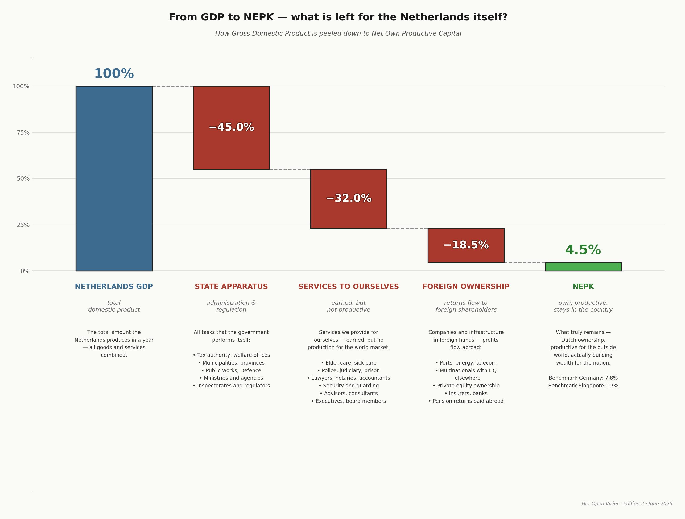

The NEPK Climate Logic: Self-Reinforcing System Crisis
Why the Dutch economic implosion is accelerating faster than expected
By Jacobus van Merksteijn · 22 min read · 28 May 2026

Summary: the core conclusion
The Dutch Net External Productive Core (NEPK) — the measure of the share of the economy that produces and exports in internationally competitive terms — fell from 9% in 2000 to 5% in 2024. At first glance, a gradual erosion. In reality, an accelerating system generating its own downfall.
Just as with climate change, small shifts activate feedback mechanisms that drive the process exponentially faster. Without intervention, we will not reach the critical 3% threshold somewhere around 2040 — but already in the early 2030s.
The Netherlands must remain above 3.5% NEPK before 2029, or implosion becomes irreversible.
From GDP to NEPK — what remains for the Netherlands itself?
Gross Domestic Product is what the Netherlands produces in a year. But the largest share flows back to the state apparatus, to services we render to ourselves, or to foreign owners. What remains — the Net Own Productivity Capital — is the portion that genuinely builds prosperity for the nation itself.

Compare this with other countries: Germany still achieves 7.8% NEPK, Singapore as much as 17%. The Netherlands, at 4.5%, sits at the bottom of the seven economies examined. That is the reason for this article: the NEPK climate logic shows why this is so urgent, and why waiting is no longer an option.
The Climate Logic: How Systems Reinforce Themselves
The climate system has a structural characteristic that makes it so politically dangerous: it does not respond with counter-pressure but with amplification. Small disturbances activate mechanisms that magnify the disturbance. Four classic examples:
Ice-albedo feedback
Melting ice → dark ocean absorbs heat → more melting → acceleration
Permafrost methane
Warming → methane released → more potent greenhouse gas → more warming
Water vapour amplification
Warmer air → more water vapour → greenhouse gas → more warming
Deforestation
Drought → less CO₂ uptake → more CO₂ → more warming → more drought
Core characteristic: The system responds not with counter-pressure but with amplification — not linear but exponential acceleration beyond a critical point. This is precisely the pattern we see in the Dutch economy.
Tipping Points & Point of No Return
After a tipping point, minor corrections no longer help. The system has entered a new, stable but unwanted state — irreversible, even if policy changes afterwards.
Climate scientists cite three well-known examples of such tipping points:
- Greenland ice sheet: irreversible collapse at 1.5–2°C
- Amazon rainforest: tips to savanna under excessive drought
- Gulf Stream collapse: ocean circulation halts under too much freshwater input
This principle applies not only to the climate — but to economic systems as well. An economy that loses its productive core cannot simply buy it back through policy adjustments.
The NEPK Logic: Economic Climate Change
The Dutch NEPK displays exactly the same structure of self-reinforcing feedback loops as the climate system. Three loops reinforce one another and together accelerate the decline:
Economic spiral
Core shrinks → rates rise → more companies leave → core shrinks further
Control spiral
Crisis → more rules → overhead grows → crisis worsens → even more rules
Social spiral
Purchasing power falls → scapegoat politics → capital flight → tax base shrinks
The initial disturbance is overhead growth — just as CO₂ is the initial climate disturbance. But the system amplifies that disturbance through three parallel channels simultaneously.
Political Paralysis as a Fuel Reservoir
Just as permafrost holds vast quantities of methane that are released once temperatures rise, Dutch democracy contains political paralysis as an accelerating fuel. Every month without a functioning government is additional "methane" being released:
- No clear direction → investments deferred
- Ad hoc emergency measures → τ (collective burden ratio coefficient) rises without structural reform
- Bureaucracy grows unchecked
The Exponential Curve: 2000–2024
The actual NEPK decline shows the pattern familiar from climate data: an apparently slow phase followed by acceleration that dwarfs the earlier curve.
| Period | NEPK | Rate of decline | Acceleration factor |
|---|---|---|---|
| 2000 | 9% | — | Baseline 1.0× |
| 2005 | 8% | 0.2%pt/year | — |
| 2010 | 7% | 0.2%pt/year | — |
| 2015 | 6% | 0.2%pt/year | — |
| 2020 | 5.3% | 0.14%pt/year | Apparent stabilisation (COVID support) |
| 2024 | 5% | 0.43%pt/year | Factor 2.0+ — exponential |
The seemingly slow decline in 2017–2024 masks the underlying acceleration. COVID support packages deferred bankruptcies and created an artificial buffer — one that is now (2024–2026) dissolving.
The Three Tipping Points of the Dutch System
The NEPK system has three critical threshold values. Each marks a qualitative leap in the system's response — not a gradual deterioration but the activation of new feedback loops.
5% threshold — now reached
2023–2024
Exit mentality dominant. 60% of entrepreneurs are preparing their business for sale. Focus shifts from growth to redistribution. Collective burden: 42%+, foreign ownership: 45%+. Decline accelerates to 0.25–0.35%pt/year.
3% threshold — fiscal crisis
Expected 2029–2033
Collective burden rises to 48–50%. Foreign ownership above 55–60%. Debt/GDP above EU norms, structural deficit >3%. Decline accelerates to 0.4–0.6%pt/year. The media narrative of "revolution against the rich" gains traction. System approaches point of no return.
2% threshold — point of no return
Risk 2033–2037
NEPK 2–2.5%. Collective burden above 55%, debt/GDP potentially above 100%. Massive capital flight. Confiscatory measures: exit taxes 50%+, wealth tax 2%+, nationalisations. The Netherlands becomes a low-productivity economy, dependent on EU transfers. This is the equivalent of losing the Greenland ice sheet: irreversible, even if policy changes afterwards.
The Democracy Paradox
The democracy that should repair the system has itself become an acceleration mechanism. Three structural mechanisms reinforce the NEPK erosion:
Fragmentation → Deadlock
More parties → longer coalition formations → no structural reforms
Power without accountability
Civil servants protect their own domain → overhead grows automatically
Scapegoat dynamics
Fragmented politics → higher burdens on remaining core → spiral
The data: coalition duration versus NEPK decline
| Period | Avg. coalition duration (days) | NEPK decline (%pt/year) | Note |
|---|---|---|---|
| 2000–2010 | 80 | 0.20 | Baseline |
| 2010–2017 | 100 | 0.14 | — |
| 2017–2024 | 200 | 0.04 | Artificially low (COVID buffer) |
| 2024–2030 | 200 (forecast) | 0.43 | Buffer gone; acceleration visible |
The apparently low decline in 2017–2024 is artificial, owing to COVID support packages. Without that buffer, the decline would already have been 0.25–0.35%pt/year. Every 100 additional coalition days correlates with +0.10%pt/year extra NEPK decline.
Projection 2024–2034: From 5% to 2% in Ten Years
Two scenarios for the next ten years. Both lead to a dramatic decline — the difference lies in the pace.
| Year | Baseline scenario NEPK | Shock scenario NEPK |
|---|---|---|
| 2024 | 5.0% | 5.0% |
| 2026 | 4.6% | 4.5% |
| 2028 | 4.0% | 4.0% |
| 2030 | 3.3% | 3.0% |
| 2032 | 2.7% | 2.2% |
| 2034 | 2.1% | 1.5% |
Baseline: progressive acceleration without external shocks. Shock scenario: 2–3 severe external shocks (energy crisis, financial crisis, geopolitical tensions) accelerate implosion to 1.5% in 2033.
This is what drives the shock scenario: from 3% (2029) to 1.5% (2033) in just 4 years.
Parameters 2024–2034
Three model parameters — α (alpha), τ (tau) and φ (phi) — describe the systemic state. α represents productive efficiency, τ the collective burden ratio and φ the share of Dutch ownership in the core.
Productive efficiency declining due to growing compliance overhead
Collective burdens increasing to compensate for the shrinking base
Dutch ownership of the core disappearing abroad
Climate vs. NEPK: Structural Comparison
The parallels are not metaphorical but structural: the system dynamics are identical.
Quantification: Acceleration Factor from Political Paralysis
The contribution of political paralysis to NEPK decline is measurable. Every 100 additional coalition days correlates with:
More overhead from lack of direction
Uncontrolled growth of the public sector
Foreign takeovers driven by uncertainty
Combined: every 50 additional coalition days correlates with +0.10%pt/year extra NEPK decline. At 200 coalition days (the current average), this is a structural acceleration effect of +0.20%pt/year on top of the autonomous decline.
Chapter 8What Does Not Work vs. What Does
Symptom treatment — does not work
- Purchasing power packages and temporary subsidies
- Minor tax adjustments
- Deferral: "the economy will grow by itself"
- (Climate equivalent: CO₂ offsetting without emissions reduction)
Systemic intervention — works
- Radical burden reduction: τ from 42% to 30–35% on the productive core
- Overhead reform: α back to 0.5–0.6 — rein in the circulation sector
- Ownership protection: φ stabilised at 50%+ — protecting the Dutch core
- End the paralysis: institutional reforms to achieve a structural mandate
Total System Acceleration: The Three Loops Combined
When all three feedback loops are active simultaneously — which occurs after crossing tipping point 2 (3% NEPK) — a multiplicative effect kicks in:
Loop 1 (Economic): factor 1.5 per cycle · Loop 2 (Control): factor 1.3 per cycle · Loop 3 (Social): factor 2.0 after tipping point 2
An autonomous decline of 0.15%pt/year becomes 0.6%pt/year once all feedback is activated — a fourfold increase in pace.
This is what drives the shock scenario: from 3% (2029) to 1.5% (2033) in just 4 years.
For comparison: in the climate system, the combination of ice-albedo feedback, permafrost methane and water vapour amplification produces a similarly non-linear acceleration once global temperature crosses certain thresholds. The structure is identical; only the timescale differs.
Conclusion: Faster Than Expected, Just Like the Climate
The NEPK decline is not a straight line but an exponential curve now accelerating. Three phases:
2000–2024
0.17%pt/year — an apparently gentle decline. It marks the onset of exponential decay, but masks the underlying acceleration through COVID buffers.
2024–2030
0.35–0.50%pt/year — exponential acceleration becomes visible. COVID buffer gone. First feedback loop fully active. This is the critical intervention window.
2030–2034
0.30–0.60%pt/year — all feedback active. After tipping point 2 (3%), loop 3 (social) takes over. Recovery becomes a generational task.
The Window: 2026–2029
Just as climate scientists warn of staying below 1.5°C before 2030, the Netherlands faces an analogous deadline:
The Netherlands must remain above 3.5% NEPK before 2029, or implosion becomes irreversible.
Window of opportunity: 3–4 years (2026–2029)
After 2030: disorderly correction or implosion mode. The parallel with climate is complete: the window for effective intervention is of the same order of magnitude as the Paris Climate Agreement — but the consequences will hit the Netherlands within a single generation.
International Comparison: What Are Other Countries Doing?
The NEPK is not uniquely Dutch — it has been calculated for seven economies. The result reveals a surprising pattern: high export figures tell us almost nothing about NEPK. What matters are ownership structure (φ) and the effective burden on the productive core (τ).
The NEPK formula: NEPK = Etv × α × (1−τ) × φ — where Etv is export value creation as % of GDP, α the productive core (after overhead & compliance), τ the effective burden rate, and φ the share of national ownership.
| Country | Export-VC % | α (core) | τ (burden) | φ (ownership) | NEPK % | Notes |
|---|---|---|---|---|---|---|
| Singapore | 107 | 0.58 | 0.17 | 0.33 | 17.0% | Highest absolute NEPK |
| Ireland | 70 | 0.55 | 0.19 | 0.38 | 11.9% | Strong through FDI model |
| Malta | 72 | 0.46 | 0.27 | 0.42 | 10.1% | Surprisingly high |
| Portugal | 40 | 0.48 | 0.29 | 0.73 | 9.8% | High despite modest exports |
| UAE/Dubai | 67 | 0.52 | 0.14 | 0.37 | 9.5% | Low burden, high expat ownership |
| Germany | 41 | 0.44 | 0.40 | 0.72 | 7.8% | Rapidly declining since 2015 |
| Netherlands | 34 | 0.39 | 0.43 | 0.53 | 4.5% | Lowest of the seven |
Source: NEPK International Comparison 2026, Jacobus van Merksteijn (27 March 2026)
τ: burden rate
Singapore 0.17 vs. Netherlands 0.43
A factor of 2.5×. This difference alone already explains much of the NEPK gap between the two countries.
φ: national ownership
Portugal 0.73 vs. Netherlands 0.53
Portugal exports far less, but retains more value domestically thanks to higher domestic ownership.
α: productive core
Singapore 0.58 vs. Netherlands 0.39
The difference of 0.19 points reflects the enormous gap in bureaucracy and compliance costs.
Core lesson: High export figures are a smokescreen. Singapore has 179% export/GDP but only 33% national ownership — profits flow largely to foreign owners. Portugal achieves only 40% export-VC but retains 73% ownership — result: NEPK 9.8% versus the Netherlands at 4.5%.
Lessons from Countries That Have Taken Action
The international comparison also shows what a NEPK turnaround looks like in practice. Three parameters must be addressed simultaneously — each in isolation is insufficient.
Singapore
17.0%
Low burden rate (τ 0.17): Effective corporate tax 15–18% — no bureaucratic barrier. Overhead kept low through competitive governance. The productive core (α 0.58) is almost 50% higher than in the Netherlands.
Portugal
9.8%
High national ownership (φ 0.73): Despite modest export volume (40% VC), Portugal retains the value. Relatively few foreign takeovers of the industrial base. Policy choice: strategic sectors protected.
UAE / Dubai
9.5%
Lowest burden rate (τ 0.14): Corporate tax 9% with many exemptions. No income tax. Attracts the productive core — despite high expat ownership (37% national), the tax factor is decisive.
The Germany Scenario: Is a Turnaround Still Possible?
Germany (NEPK 7.8%, declining) has calculated what a full turnaround would yield if all four parameters are addressed simultaneously:
| Parameter | Current (2026) | Target (2030) | NEPK effect | Key measure |
|---|---|---|---|---|
| Export-VC% | 41% | 45% | +0.8% | Re-industrialisation, energy price guarantee |
| α (productive core) | 0.44 | 0.55 | +2.0% | Deregulation: "add one, remove three"; sunset clauses |
| τ (burden rate) | 0.40 | 0.33 | +1.3% | Export tax relief 12% instead of 30%; R&D deduction 200% |
| φ (national ownership) | 0.72 | 0.78 | +1.1% | Strategic sectors list; Mittelstand fund €20 bn |
| Combined effect | +5.2% | NEPK from 7.8% to 13.0% (2005 level) | ||
Critical time window for Germany: 2026–2027 is the last moment for an orderly intervention. If NEPK falls below 6% (2028), capital flight feedback begins and a gradual turnaround becomes virtually impossible.
Cautionary Tales: Countries That Failed to Intervene
The comparison also shows which pattern leads to a NEPK trap, even in countries with impressive export figures.
Singapore & Ireland: the ownership trap
- Singapore: 179% export/GDP — but only 33% national ownership
- Ireland: 128% export/GDP — only 38% national ownership (FDI-dominant)
- NEPK of 17% and 11.9% respectively, but almost no benefit for the domestic population
- 60% of top incomes in Singapore go to foreign companies
- Ireland: pharma and tech entirely in foreign hands — vulnerable to policy changes
- Lesson: High exports without an ownership policy is transit trade, not prosperity
Malta & UAE: the expat-structure trap
- Malta: 145% export/GDP — 44% national ownership; >31,000 foreign-managed companies out of 90,000 total
- UAE: 100% foreign ownership only permitted since 2021; national ownership share just 37%
- High NEPK percentages are misleading: they measure economic activity, not the flow to the domestic population
- Expat populations repatriate wealth: national wealth accumulation remains low
- Lesson: Without structural ownership anchoring, high export figures are temporary — and cannot be passed on to future generations
Germany: from cautionary tale to decline
Germany is the most direct mirror image for the Netherlands — and the most alarming:
2000–2020: Gradual erosion
NEPK falls from 11.3% to 9.5%. α creeps downward (0.65 → 0.54), φ declines from 0.88 to 0.78. Still strong thanks to Mittelstand culture — but all four parameters are deteriorating.
2020–2026: Accelerated collapse
Energy crisis as catalyst: NEPK falls from 11.2% to 7.8% — 3.4 percentage points in six years (−0.57 pt/year). Industrial electricity 2–3× more expensive than before 2022. α drops from 0.54 to 0.44: as much α-erosion as the Netherlands suffered in 15 years.
2026–2030: Crossroads
Without intervention: NEPK falls to 4.6% — the current Dutch level. The automotive sector is expected to lose 100,000–150,000 jobs by 2030; each percentage point of contraction in automotive = −0.15 to −0.20 pt NEPK.
With full intervention: NEPK rises to 13.0% (2005 level).
2030–2035: Developing-country dynamics (without intervention)
NEPK 3.0–3.5% (2031–2032): social instability. Chronic budget deficit, capital flight feedback, political radicalisation. Around 2034–2035: point of no return at around 2% — structural youth unemployment >15%, dependence on EU transfers.
The central lesson: Germany had a NEPK of 11% in 2022 — now 7.8%. 3.4 percentage points lost in four years. The intervention window is closing fast. For the Netherlands — already at 4.5% — it is even narrower.
What This Means for the Netherlands: Concrete Benchmarks
The international comparison makes it possible to formulate concrete, measurable targets for the Netherlands — based on what other countries have genuinely achieved.
τ — Effective burden rate on the productive core
Current: 0.43 (highest of the seven)
Target 2030: 0.33 — Portugal's level
Reference: Ireland 0.19 — achievable via export tax relief, reduction of employer contributions in core sectors and limiting ESG reporting obligations for companies <500 FTE.
α — Productive core after overhead & compliance
Current: 0.39 (lowest of the seven)
Target 2030: 0.48 — Portugal's level
Reference: Singapore 0.58 — achievable via "add one, remove three" deregulation, accelerated permitting (<6 months for projects >€50 mn) and NEPK free zones with 50% less regulatory burden.
φ — National ownership share
Current: 0.53 (sharply down from 0.80 in 2000)
Target 2030: 0.60 — stabilising towards German level
Reference: Portugal 0.73, Germany 0.72. Instruments: 25% exit tax on foreign takeovers in strategic sectors; national succession fund €5 bn; compulsory public ownership register.
NEPK % — Overall outcome
Current: 4.5% (lowest of the seven)
Target 2030: above 7.0% — Germany's 2026 level
Absolute minimum to avoid the critical 3% threshold before 2029–2030. Combined effect (τ↓ + α↑ + φ stable): +2.5 to +3.0 percentage points achievable within four years, provided all measures are implemented simultaneously.
The Netherlands' advantages over Germany
Structural advantages
- Small and agile: No federalism, faster decision-making, experiments possible (NEPK free zones)
- Strategic assets: Rotterdam, Schiphol and Amsterdam as international hubs
- Narrower industrial base: No legacy of heavy industry requiring transformation — lower transition costs
- Language & culture: International orientation as a comparative advantage for attracting highly skilled talent
Critical limitations
- Less time: Critical 3% threshold only 30–40 months away (Germany still has 5–6 years)
- Already at a lower starting point: 4.5% NEPK vs. Germany's 7.8% — less margin for error
- Higher burden rate: τ 0.43 is already higher than the level Germany must reach as its target
- Stronger φ-erosion: From 0.80 (2000) to 0.53 (2026) — the Netherlands has lost relatively more ownership than Germany over the same period
The international benchmark summarised: The Netherlands scores 4.5% NEPK — the lowest of seven comparable economies. Portugal achieves 9.8% with lower exports. Singapore achieves 17.0% with lower burdens. If the Netherlands brings the burden rate (τ) from 0.43 to 0.33 and α from 0.39 to 0.48, a NEPK of 7.0–8.0% is achievable before 2030 — provided action is taken now.
Urgency for Nova Democratia
The analysis leads to one hard conclusion: the Netherlands has 3–4 years (2026–2029) to set three actions in motion. Without these actions, tipping point 2 (3% NEPK, around 2029–2030) is unavoidable — and implosion to 2% by 2033–2035 is irreversible.
Make the NEPK narrative politically dominant
Create public and political awareness of the systemic crisis. As long as the debate centres on redistribution rather than the productive core, the structural problem remains masked.
Mandate for structural reforms
τ↓, α↑, φ stabilise — radical systemic interventions. Not purchasing power packages but a complete reorientation of the collective burden structure towards the productive core.
End political paralysis
Institutional reforms that break deadlocks. As long as democracy itself is an acceleration mechanism, no policy will work fast enough to avoid tipping point 2.
If this fails: tipping point 2 (3% NEPK) around 2029–2030 → implosion to 2% by 2033–2035 is irreversible. The Netherlands then becomes a low-productivity economy, dependent on EU transfers. Generations of recovery — precisely as the climate requires thousands of years after the Greenland ice sheet tips.